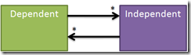

How does it work?
Update Controls is not magic. It determines what each property depends upon by employing a fairly simple algorithm. From there, it just hooks into data binding using the standard means.
Properties and fields
In .NET, you have fields and properties. A field stores data. A property is a pair of methods: get and set. Most people confuse them for the same thing, but they are actually quite different.
We often see properties and fields in one-to-one correspondence. We create a field called _name, then expose that through a property called Name. This pattern is so common, that Microsoft added auto-implemented properties to the C# language. But this is not the only way that fields and properties can work together.
A property could calculate values based on one or more fields. The fields could be in the same object, or in a related object. More than one property could access the same field. For example, a person having two fields - _firstName and _lastName – could have three properties – FirstName, LastName, and FullName. The fields and properties need not be in one-to-one correspondence.
Dependent and Independent
At the core of the dependency tracking algorithm are two classes:
- Dependent keeps track of properties
- Independent keeps track of fields
To determine the value of a property, .NET executes its get method. This code is going to access one or more fields. These are the fields that the property depends upon.
{kind=link}
The two classes set up a many-to-many relationship. A Dependent keeps track of every Independent that it accesses, and an Independent keeps track of every Dependent that accesses it.
Setup and teardown
When a Dependent (like the one in charge of FullName) is first created, it is in a state called OUT_OF_DATE. The first time that it is accessed, it sets up the two-way relationships with its Independents. To help with this, it uses a thread-local bulletin board called “Current Dependent”.

At first this bulletin board is empty (1). Before the Dependent calls the property’s get method, it posts itself to the bulletin board. Then it enters a state called UPDATING. The bulletin board now contains the Dependent for FullName (2).
Then it calls the get method. This method might immediately access some fields. Or it might call other methods, that call other methods, that eventually access fields. When it does, the application calls Independent.OnGet(). The Independent writes itself to the bulletin board. After the FullName get method completes, we have the _firstName and _lastName fields on the bulletin board (3).
After the Dependent calls the get method, it looks at the bulletin board. It sees that its property (FullName) depends upon the listed fields (_firstName and _lastName). So it wires up the two-way relationship between that one Dependent and those two Independents. Now the Dependent is in a state called UP_TO_DATE. This completes the setup phase.
Teardown occurs when an Independent changes. When Independent.OnSet() is called, it talks to every Dependent that has accessed it. For example, _firstName is accessed by both FirstName and FullName. All of these Dependents again become OUT_OF_DATE. They sever their relationships with all of their Independents. This is also the trigger that causes PropertyChanged events to fire, which in turn leads to the setup phase happening all over again.
Conclusion
This ebb and flow of setting up and tearing down relationships between Dependents and Independents is the basis of the dependency tracking algorithm. As you can see, there is no magic. A property simply records all of the fields that it accesses during its get method. When any of those fields change, the property is out-of-date. This is the same kind of dependency tracking that you would have to do yourself, but this all happens in code that you don’t see. That’s what makes it feel like magic.
Comments
This description is not complete...
...without saying what happens when a Dependent depends on another Dependent.
Precedent
Good point. Both Independent and Dependent derive from a common base class: Precedent. The relationship I describe above is actually between a Dependent and a Precedent. I just tried to simplify things by showing Independent directly.
So since both Independent and Dependent derive from Precedent, either one can be the source of data for a Dependent. This opens the way for indirect dependencies. To finish this story, we have to build up and tear down that relationship.
A Dependent-Dependent relationship is built in the same way as a Dependent-Independent relationship. While the target Dependent is updating, it accesses the source Dependent. This calls OnGet(), which does two things. First, if the source Dependent is OUT_OF_DATE it pushes itself onto the Current Dependent stack and updates itself. Second, it sets up the two-way connection with the target Dependent.
The tear-down is just a little different. Independent has an OnSet() method, which triggers the tear down (as described above). Dependent has no OnSet() method. Instead, it tears down relationships with it's dependents when it goes OUT_OF_DATE. This process is recursive.
The description in the article is incomplete, but indirect dependencies are still not magic. They are simply recursive.
Is it worth suppressing non-change events?
David again. Is there a forum? Or is it okay to post comments to random blog entries? I could email you, but when it comes to open source, I like public discussions.
Currently, when somebody changes an independent property, OnSet() is called on the sentry unconditionally. What if the new value is the same as the old value? How often do you suppose it's worth checking whether the new value is actually different before calling OnSet()? Independent<T> could do that, of course. Depending on the situation, I figure that propagating changes could be expensive. Or, propagating a single change might not be expensive, but a complex app may be structured such that there are many false updates per second. Who knows.
Likewise, a dependent does not always change when one of the things it depends on changes (but I don't see a mechanism to inform Dependent that the value did not change during the _update.)
FIXME: the documentation of WinForms UpdateControls is not available.
http://updatecontrols.net/documentation/namespaceDocumentation/cs/Update...
Yes, it is worth suppressing non-change events
Comments are welcome here, but you can also post to http://updatecontrols.codeplex.com/discussions
Absolutely, it is worth suppressing non-change events. If the setter calls OnSet(), then it triggers all related dependent updates. If the value hasn't actually changed, this would result in the same dependent values being recalculated (assuming determinism, which is required for this algorithm to work anyway). This is a great optimization.
Unfortunately, there is no way to suppress changes to dependents. If an independent changes, but a direct dependent produces the same result, indirect dependents will still fire.
That documentation set was hard to maintain and not entirely useful, so I took it down a couple of years ago. I'll have to remove all links to it.